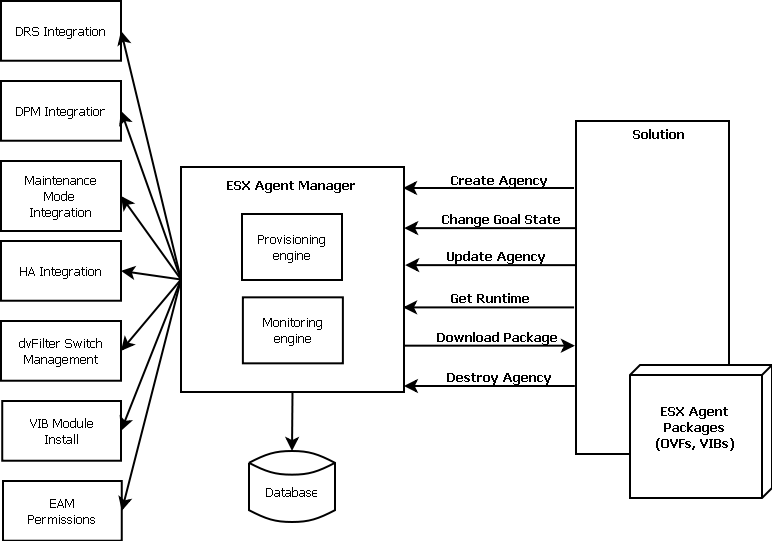
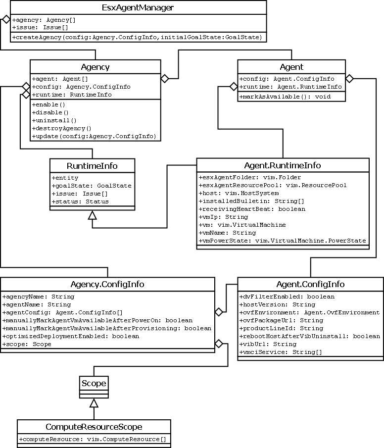

Welcome to the vSphere ESX Agent Manager API Reference documentation. This API reference provides comprehensive information about all data structures available through the vSphere ESX Agent Manager API:
The vSphere ESX Agent Manager API is exposed as a Web service, running on vSphere server systems. The API provides access to the vSphere management components—the managed objects that can be used to manage, monitor, and control life-cycle operations of agencies and agents.
The vSphere API Reference is an HTML frameset. Click an entry in the left-hand pane to display information in the right-hand pane.
The vSphere ESX Agent Manager is installed as part of the vSphere platform. Solutions building on top of vSphere can assume vSphere ESX Agent Manager is always present. vSphere ESX Agent Manager exposes a SOAP-based API similar to the VIM API, that solutions use to register and monitor agents.
vSphere ESX Agent Manager is an intermediary between vCenter and a solution with two key aspects: provisioning agent virtual machines and VIB modules for the solution onto a scope in vCenter; and monitoring changes to the agent virtual machines and scope in vCenter, and reporting them back to the solution.
A solution can create an agency in vSphere ESX Agent Manager, change its goal state, update its configuration (for example, update the scope or OVFs and VIBs), query runtime information on the agency as well as on its agents. Finally, the solution can decide to destroy the agency if it is no longer needed. The solution specifies the agent virtual machine, VIB and scope in the configuration when specifying the agency. For VIBs that require dvFilter integration, vSphere ESX Agent Manager sets up special dvFilter switches on the hosts in the agency scope and integrates with the VMCI access manager (VMCI exists on ESX 5.0 hosts and later). Some vSphere ESX Agent Manager functionality is implemented in vCenter, which means that vCenter is agent virtual machine aware and the features DRS, DPM, Maintenance Mode, HA take into account when a virtual machine is an agent virtual machine. vSphere ESX Agent Manager hooks into vCenter's permission model and makes sure that only users with special vSphere ESX Agent Manager view and vSphere ESX Agent Manager modify privileges will be able to modify entities created by vSphere ESX Agent Manager in vCenter or by the vSphere ESX Agent Manager API.
vSphere ESX Agent Manager monitors changes to the scope covered by agencies, as well as agent virtual machines and hosts. Some changes are handled by vSphere ESX Agent Manager, while others are reported back to solutions if there is no obvious solution to the issue. For example, if an administrator powers off an agent virtual machine it may be for legitimate reason, so it would be wrong of vSphere ESX Agent Manager to power it back on again the moment it detects the power change. Instead, vSphere ESX Agent Manager raises an issue to the solution to handle this problem. Most issues can be resolved by vSphere ESX Agent Manager if the solution requests it to do so. The solution can also handle any issue without using vSphere ESX Agent Manager and vSphere ESX Agent Manager detects this and automatically resolves the issue. Using the previous example, if the solution itself or if the solution asks an administrator to power on the agent virtual machine, vSphere ESX Agent Manager will detect this and remove the issue.
Solutions should not poll vSphere ESX Agent Manager to monitor changes in their agencies, but instead use the EventManager in the vSphere API. A solution needs to create an vim.EventHistoryCollector that listens for events coming from vSphere ESX Agent Manager (events with username com.vmware.vim.eam). Every time an issue, a state change or an event occurs in vSphere ESX Agent Manager it will generate an event to the EventManager on the vCenter server that is then channeled down into the respective EventHistoryCollectors, which are finally propagated to the solution.
The vSphere ESX Agent Manager data model is small and basically consists of these nine classes (there are more but these are the basic ones).
An agency and its agents each maintains a status field which can be either Red, Yellow, or Green. The meaning of each value is described briefly below. In each of the more detailed workflow articles we also describe what status an agency or agent is transitioning between.
An agency's EAM health status is the aggregate status of all the agents' statuses. An agency's EAM status always reflects the lowest status of any of the agents' EAM status. The solution can use the health status to determine if it needs to take action or if vSphere ESX Agent Manager is handling the situation.
The RED health status is used to indicate that the solution must somehow intervene for vSphere ESX Agent Manager to proceed. An example of this is when an agent virtual machine is powered off manually on a compute resource. In this case vSphere ESX Agent Manager does not try to power the agent back on since it assumes the Admin has a reason for stopping the agent. Rather vSphere ESX Agent Manager reports the fact back to the solution which then must take action, for example by asking the Admin to power on the agent again.
The YELLOW health status indicates that vSphere ESX Agent Manager is actively working on reaching a given goal state. The goal state can be one of Enabled, Disabled, and Uninstalled (see How To Register, Deploy, and Destroy a Solution for details). For example, when a solution is first registered, its status is YELLOW if the state is Disabled or Uinstalled until vSphere ESX Agent Manager has deployed the solution's agents to all the specified compute resources. If the state is Uninstalled the status is GREEN. A solution does not need to intervene when vSphere ESX Agent Manager reports its EAM health status as YELLOW.
The GREEN health status is used to indicate that a solution and all its agents have reached the desired goal state.
For conceptual and “how to” information, see one of these vSphere Web Services SDK technical publications:
The most recent published versions of these guides are available at:
http://www.vmware.com/support/developer/vc-sdk